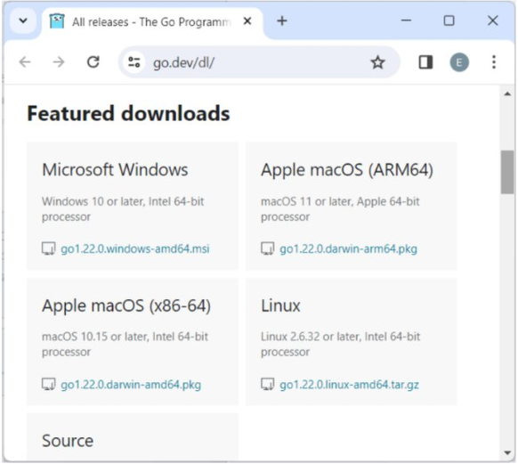
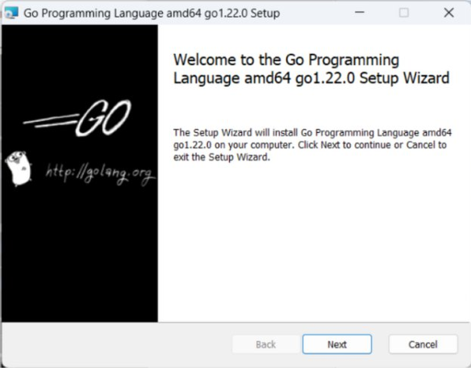
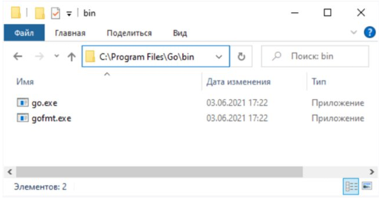
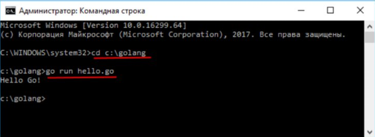
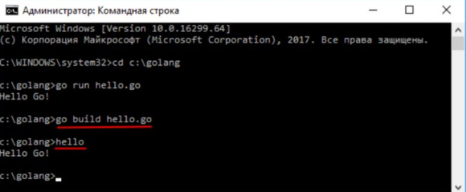

Глава 1. Введение в язык Go
Что такое Go
Go представляет компилируемый статически типизированный язык программирования от компании Google. Язык Go предназначен для создания различного рода приложений, но прежде всего это веб-сервисы и клиент-серверные приложения. Хотя также язык обладает возможностями по работе с графикой, низкоуровневыми возможностями и т.д.
Работа над языком Go началась в 2007 в недрах компании Google. Одним из авторов является Кен Томпсон, который, к слову, является и одним из авторов языка Си (наряду с Денисом Ритчи). 10 ноября 2009 года язык был анонсирован, а в марте 2012 года вышла версия 1.0. При этом язык продолжает развиваться. Текущей версией на момент написания данной статьи является версия 1.22, которая вышла в феврале 2024 года.
Язык Go развивается как open source, то есть представляет проект с открытым исходным кодом, и все его коды и компилятор можно найти и использовать бесплатно. Официальный сайт проекта — https://go.dev/, где можно найти много полезной информации о языке.
Go является кроссплатформенным, он позволяет создавать программы под различные операционные системы — Windows, MacOS, Linux, FreeBSD. Код обладает переносимостью: программы, написанные для одной из этих операционных систем, могут быть легко с перекомпиляцией перенесены на другую ОС.
Основные особенности языка Go:
- компилируемый — компилятор транслирует программу на Go в машинный код, понятный для определенной платформы
- статически типизированный
- присутствует сборщик мусора, который автоматически очищает память
- поддержка работы с сетевыми протоколами
- поддержка многопоточности и параллельного программирования
В настоящее время Go находит широкое применение в различных сферах. В частности, среди известных проектов, которые применяют Go, можно найти следующие: Google, Dropbox, Netflix, Kubernetes, Docker, Twitch, Uber, CloudFlare и ряд других.
Что нужно для работы с Go? Прежде всего необходим текстовый редактор для набора кода и компилятор для преобразования кода в исполняемый файл. Также можно использовать специальные интегрированные среды разработки (IDE), которые поддерживают Go, например, GoLand от компании JetBrains. Существуют плагины для Go для других IDE, в частности, IntelliJ IDEA и Netbeans.
Установка Go
Пакет для установки компилятора можно загрузить с официального сайта https://go.dev/dl/.

По этому адресу находятся пакеты установщиков для различных операционных систем. Обратите внимание на версии поддерживаемых систем. Так, на момент написания текущей статьи поддерживались только версии Windows 10 и выше, MacOS 10.15 и выше и Linux 2.6.32 и выше, но все версии должны быть 64-разрядными. Загрузим подходящий для нашей ОС пакет установщика и запустим его. Процесс установки относительно прост — надо лишь понажимать на кнопки в окнах установщика.
Установка на Windows
Например, стартовое окно установщика для Windows:

После успешной установки в папке установки будут установлены все файлы, необходимые для работы с Go. В частности, в подкаталоге bin можно найти файл go (go.exe на Windows), который выполняет роль компилятора:

Для Linux оф. сайт предоставляет архив. Например, в моем случае это файл go1.22.0.linux-amd64.tar.gz. Для установки этого архива выполним команду
sudo rm -rf /usr/local/go && tar -C /usr/local -xzf go1.22.0.linux-amd64.tar.gzЭта команда удаляет ранее установленную версию (если таковая имеется) и устанавливает новую в папку /usr/local/go, соответственно компилятор будет располагаться в папке /usr/local/go/bin
После этого внесем путь к папке "/usr/local/go/bin" в переменные среды. Для этого добавим в конец файла $HOME/.profile или /etc/profile следующую строку
export PATH=$PATH:/usr/local/go/binИ для немедленного применения ее выполним команду
source $HOME/.profileПроверка установки Go
После установки мы можем проверить версию языка, запустив в консоли команду go version:
C:\Users\eugen>go version
go version go1.22.0 windows/amd64
C:\Users\eugen>Первая программа
Создадим первую программу на языке Go. Для написания кода нам потребуется какой- нибудь текстовый редактор. Можно взять любой редактор, например, встроенный блокнот или популярный Notepad++ или любой другой. Для трансляции исходного кода в приложение необходим компилятор.
Создание программы
Определим на жестком диске папку для хранения файлов с исходным кодом. Допустим, в моем случае это будет папка C:\golang. В этой папке создадим новый текстовый файл, который переименуем в hello.go.
Откроем этот файл в любом текстовом редакторе и определим в нем следующий код:
package main
import "fmt"
func main() {
fmt.Println("Hello Go!")
}Что в этой программе делается? Программа на языке Go определяется в виде пакетов. Программный код должен быть определен в каком-то определенном пакете. Поэтому в самом начале файла с помощью оператора package указывается, к какому пакету будет принадлежать файл. В данном случае это пакет main:
package mainПричем пакет должен называться именно main, так как именно данный пакет определяет исполняемый файл.
При составлении программного кода нам может потребоваться функционал из других пакетов. В Go есть множество встроенных пакетов, которые содержат код, выполняющий определенные действия. Например, в нашей программе мы будем выводить сообщение на консоль. И для этого нам нужна функция Println, которая определена в пакете fmt. Поэтому второй строкой с помощью директивы import мы подключаем этот пакет:
import "fmt"Далее идет функция main. Это главная функция любой программы на Go. По сути все, что выполняется в программе, выполняется именно в функции main.
Определение функции начинается со слова func, после которого следует название функции, то есть main. После названия функции в скобках идет перечисление параметров. Так как функция main не принимает никаких параметров, то в данном случае указываются пустые скобки.
Затем в фигурных скобках определяется тело функции main — те действия, которые собственно и выполняет функция.
func main() {В нашем случае функция выводит на консоль строку "Hello Go!". Для этого применяется функция Println(), которая определена в пакете fmt. Поэтому при вызове функции вначале указывается имя пакета и через точку имя функции. А в скобках функции передается то сообщение, которое она должна выводить на консоль:
fmt.Println("Hello Go!")Компиляция и выполнение программы
Теперь скомпилируем и выполним данную программу. Для этого необходимо передать файл с исходным кодом компилятору go.exe и указать нужную команду. Для этого откроем командную строку (терминал) и перейдем в ней с помощью команды cd к папке, где хранится файл с исходным кодом hello.go (в моем случае это папка C:\golang):
cd C:\golangЗатем выполним программу с помощью следующей команды:
go run hello.gogo — это компилятор. Поскольку при установке путь к компилятору автоматически прописывается в переменную PATH в переменных окружения, то нам не надо указывать полный путь C:\Go\bin\go.exe, а достаточно написать просто имя приложения go. Далее идет параметр run, который говорит, что мы просто хотим выполнить программу. И в конце указывается собственно файл программы hello.go.
В итоге после выполнения на консоль будет выведено сообщение "Hello Go!".

Данная команда выполняет, но не компилирует программу в отдельный исполняемый файл. Для компиляции выполним другую команду:
go build hello.goПосле выполнения этой команды в папке с исходным файлом появится еще один файл, который будет называться hello.exe и который мы можем запускать. После этого опять же мы можем выполнить программу, запустив в консоли этот файл:
